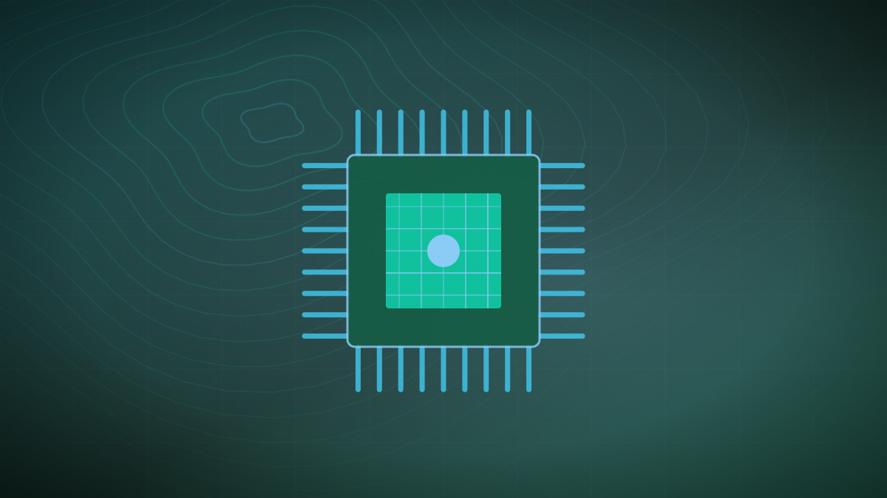

Original illustration · not a photograph of the event
Infrastructure · Multiple-publisher coverage
Nvidia CEO Jensen Huang’s affair: everything you need to know
We have put together stories from our coverage of Jensen Huang’s affair and its potential repercussions.
South China Morning Post + 1 more · Publisher report · not fact-checked
Read original report